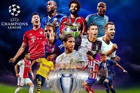

Mis gustos en lo deportivo son variados, ya que todos los deportes me gustan pero mi pasion es el futbol, es mi vocacion es en lo que me desempeño libremente por el campo, desde pequeño me gusto el futbol, y no fue hasta los 10 años que entre a un equipo, mi posicion principal es la defensa, pero me identifico como un jugador rotativo ya que puedo jugar tambien facilmente como mediocampista y de esta manera ayudar en la defensa y por las bandas para conseguir la victoria con mi equipo.
Mis equipos favoritos son el America en Mexico y el Barcelona en Europa, me apacionan los equipos europeos, mi jugador favorito es Antonie Griezman, el jugador frances del Barcelona es todo un crack y sus papos uffas en general me gusta todo lo relacionado con el futbol y espero algun dia asistir a una copa mundial y vivir esa experiencia.